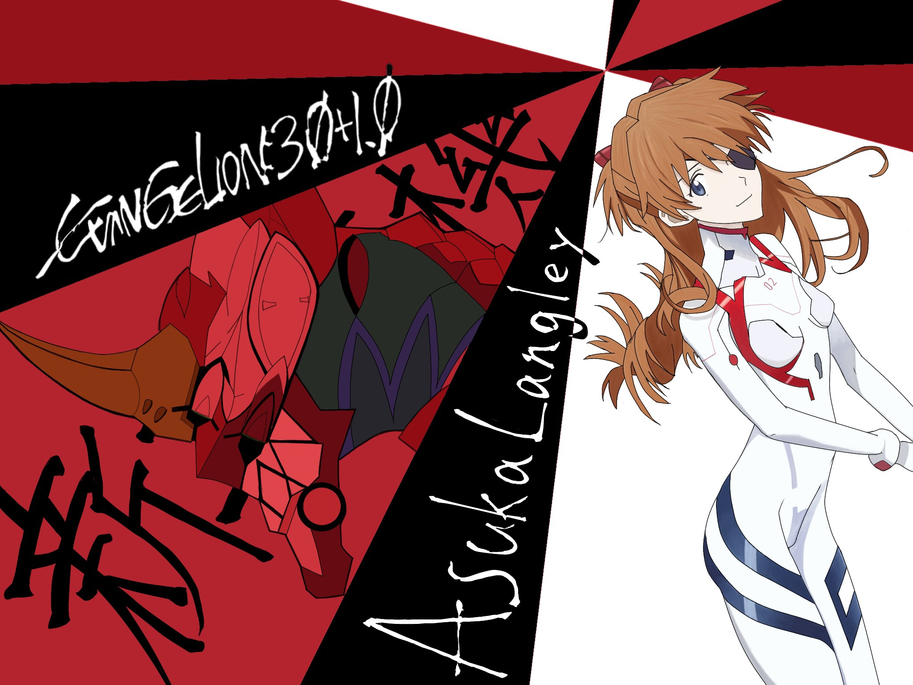

Yuto's Portfolio
大阪公立大学工業高等専門学校の4年生です。メカトロニクスコース在籍しています。
在学中に行ったこと
1, 3年次にマインクラフトにて大阪高専を再現し構築しました。
具体的には大阪高専が2026年に移転が決まっているため現在の大阪高専を後世に残すという目的のためマインクラフトで大阪高専を作成しました。 チームで作成を行ったため大阪高専を4つのエリアに分け、そのうち北エリアを担当しました。
2, 3年次に高専祭にてラジコンで陣取りをするゲームを作成しました。
具体的にはアルディーノを使いラジコンを作り3x3の陣で時間内より多くのエリアを取りあうゲームにおいて、ラジコンの配線や陣取りを行うテーブルの配線などを行いました。

基礎研究
コンセプト
子どもや身体の不自由な人でも利用のしやすいお寿司屋さんを目指す。 ご老人や身体が不自由な方に向けて製作を行うため、お客様に作業をさせないように、お店側がすべての作業を行い、お客様にかかる負担を減らせるように目指すのが目標とする。
チーム人数と取り組み期間
4人 4月から12月
役割や担当
リーダーを行いコンセプトの提案やプログラムの提案などを行いました。
趣味
絵を描くことが趣味です。

Skills
授業やクラブ活動、文化祭活動、趣味を含めて利用経験のあるハードウェアやソフトウェアの一覧です。
- Creo Parametric
- Fusion 360（3D-CAD）
- 汎用旋盤
- ボール盤
- フライス盤
- 3Dプリンタ
- Arduino
- Raspberry Pi
- 電子工作（ブレッドボード）
- Python
- C 言語
- Arduino言語
- Creo Parametric